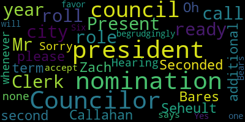

AI-generated transcript of City Council Committee of the Whole 12-17-24
English | español | português | 中国人 | kreyol ayisyen | tiếng việt | ខ្មែរ | русский | عربي | 한국인
Back to all transcripts
[Bears]: Test one, two.
[Tseng]: Hey guys, I'm on my, I am on my way, but the bus is running late, so I'm joining via Zoom first. I should be there in like 10, within 10 minutes. I'll leave it up to the Councilors who are present to see if they want to start with me in person or on Zoom.
[Hurtubise]: Councilor Leming is on. Councilor Leming is on. And Vice President Collins just walked in. But we are still waiting for the president.
[Bears]: Medford City Council Committee of the whole December 17 2024 is called the order. Mr. Please call the roll.
[Hurtubise]: Council Callahan
[Callahan]: Present
[Hurtubise]: Vice President Collins?
[Collins]: Present
[Hurtubise]: Councilor Lazzaro?
[Lazzaro]: Present
[Hurtubise]: Councilor Leming?
[Leming]: Present
[Hurtubise]: Councilor Scarpelli?
[Scarpelli]: Present
[Hurtubise]: Councilor Tseng?
[Tseng]: Present
[Hurtubise]: President Bears?
[Bears]: Present. Seven present, none absent. The meeting is called to order. There'll be a meeting of the Medford city council committee of the whole at 6 30 PM in the city council chamber, second floor, Medford city hall, 85 George B has to drive Medford ma and via zoom. The action and discussion item today is two four five one one, a caucus to designate the 2025 council leadership. Are there any nominations for the office of the vice president of the city council for the year 2025? well, vice president-elect, Councilor Lazzaro. Oh, sorry, still getting used to that.
[Lazzaro]: I nominate Councilor Kit Collins for vice president.
[Bears]: Councilor Collins has been nominated for vice president, seconded by Councilor Callahan. Are there any further nominations for vice president-elect of the City Council for the year 2025? Seeing none, nominations are closed. On the nomination of Vice President Collins as Vice President-Elect for the year 2025, Mr. Clerk, please call the roll. Oh, to accept the nomination, I guess I should ask. Vice President Collins accepts the nomination.
[Hurtubise]: Would you like me to call the roll?
[Bears]: Yes, please, Mr. Clerk.
[Hurtubise]: Councilor Callahan. Vice President Collins. Councilor Lazzaro. Councilor Leming.
[Leming]: Yes.
[Hurtubise]: Councilor Scarpelli.
[Bears]: Yes. I think that's the next one. Yeah.
[Hurtubise]: Councilor Tseng.
[Bears]: Yes.
[Hurtubise]: president bears.
[Bears]: Yes, six present six in the affirmative one present vice president Collins is the president elect for vice president elect for 2025. Congratulations. Are there any nominations for the office? No, just wait a minute. Great. Do you want to take the chair for this one? Thanks.
[Collins]: Are there any nominations for the role of president of the city council for the year 2025? Councilor Seheult.
[Tseng]: I nominate Isaac B. Zach Bears for president.
[Collins]: Do I have a second? Seconded by Councilor Callahan. On the nomination of Councilor Zach Bares for the role of President of the City Council for the 2025 term. Mr. Clerk, when you're ready, please call the roll. Oh, are there any additional nominations? Hearing none, Mr. Clerk, whenever you're ready, you can call the roll. Sorry, this is why you're the president. Do you accept the nomination? He says begrudgingly.
[Hurtubise]: Councilor Callahan. Councilor Lazzaro. Councilor Leming.
[Leming]: Yes.
[Hurtubise]: Councilor Scarpelli. Councilor Tseng. Yes. President Bears. Vice President Collins.
[Collins]: Yes. Six in favor, one present. Councilor Bears will be the president of the council for the year 2025.
[Bears]: Thank you, everyone. And just a reminder, we will have the formal vote at the beginning of our first regular meeting in January. And right now we are president and vice president elect for the year 2025. Any further comments or discussions by members of the council? Is there a motion on the floor? On the motion to adjourn by councilors saying seconded by? Seconded by Vice President Collins. Mr. Clerk, please call the roll.
[Hurtubise]: Councilor Callahan, Vice President Collins, Council Lazzaro, Councilor Leming.
[Leming]: Yes.
[Hurtubise]: Councilor Scarpelli, Councilor Tseng, President Bears.
[Bears]: Yes, I'm in the affirmative, none the negative. The motion passes and this meeting is adjourned. We'll reconvene at 7pm for our regular meeting.
Bears
total time: 2.56 minutes
total words: 350
|
Tseng
total time: 0.5 minutes
total words: 65

|
Callahan
total time: 0.15 minutes
total words: 1
|
Collins
total time: 1.24 minutes
total words: 110

|
Lazzaro
total time: 0.22 minutes
total words: 9
|
Leming
total time: 0.17 minutes
total words: 4
|
Scarpelli
total time: 0.15 minutes
total words: 1

|
|
|
|
|
|
|
|
|
|
|
|
Back to all transcripts
{kind=link}
{kind=link}
{kind=link}
{kind=link}
{kind=link}